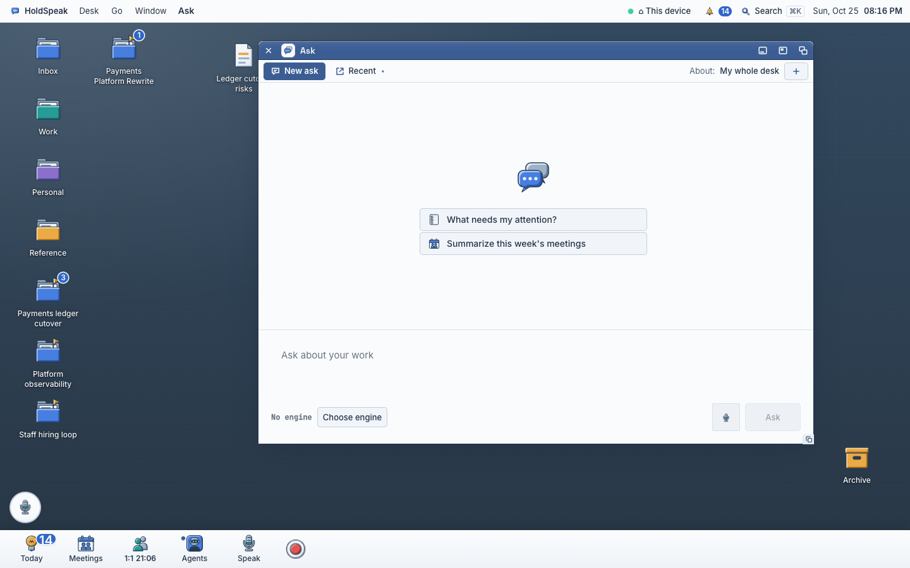

The Ask window
An audit of the Ask window and two directions for it, drawn at real size (760 × 560) over the real 1440 desk, in our tokens and the window grammar. The recommendation is first.
The worked example uses the seeded desk of the browser rig (tests/e2e/chair_rig.py:28–76): the projects Payments ledger cutover, Platform observability and Staff hiring loop; the decision "Freeze the old ledger on Nov 5"; the note "Ledger cutover risks"; the meetings Ledger cutover sync, Architecture review: tracing and 1:1 Avery; the people Avery Chen, Jordan Patel, Sam Rivera and Priya Nair, three of them with a request for a status by Thursday.

1. Audit: what Ask is for, and what the window does
Read from the code on branch lane/ask-canvas-20261027 (b7913204c) and the reviews adversarial/ask_whole_desk.md and adversarial/keep_answer.md, with the workflow map rows ask_whole_desk, threads and keep_answer (design-proposal/WORKFLOW-MAP.md:87–89).
POST /api/ask with no context. The hub reads memory, or the engine reads with the desk tools. It returns the answer, looked_at as ref and title (ask_service.py:710), a grounding receipt (matched and overflow counts), per-claim support, what the tools wrote and prepared, and the thread id (ask.ts:338–393).AskPanel.tsx:918).AskTurn has no field for them (ask.ts:418–426).ask.ts:225).AskPanel.tsx:409–520).saveAnswerAsNote writes the answer and the Looked-at names into a Note (ask.ts:567). No Keep or Bin (DECISIONS #14).AskPanel.tsx:927–945).thread_id. listThreads gives title and last turn time (threads.ts:24–39).AskPanel.tsx:814).ask.ts:631–715) and Ask does not call it (ask_whole_desk P1).useEngine("ask.answer") gives the engine's name (useEngine.ts:46). Progress frames say busy, trying again, or a held call (AskPanel.tsx:254). There is no answer text until the end.AskPanel.tsx:1032). Engine set: a "Tools" fold; the status bar names the engine.3–8presses from the key to the first answer
- ⌘I opens Ask with the composer focused (
verbRegistry.ts:741), type, Enter: 3 acts. This is good. - From the mouse: Ask has no dock tile (the dock is Today, Meetings, 1:1, Agents, Speak, Record). Go ▸ Ask AI, then type and Enter: 4 acts.
- A suggestion card fills the composer and does not send (owner canvas 2026-10-21), then Enter: 2 acts for a question that knows nothing of the desk.
- About a project: + , type, pick, then ask: 3 more acts.
- No engine (the shot above): type, Ask, the failure, Choose engine opens Settings in another window, choose, come back, Ask again: about 8 acts and two windows.
Why it reads as "total shit", in plain words
- The empty theatre. About 390 px of blank paper with a speech-bubble picture in the centre. Seventy percent of the window is nothing.
- The composer is a page footer. A 140 px band at the bottom: a grey placeholder, then the mic and a big disabled Ask far to the right. It looks like a web form, not a window.
- The engine is a mono warning. "No engine" in code type beside a button reads as a debug line.
- The suggestion cards are the chatbot cliché. Two bordered cards with generic words. They do not know the 14 items in Needs you, the Nov 5 freeze or the three people who wait for him.
- No sense of the desk. The scope is small grey text at the far right. Nothing says what Ask will read.
- The loudest thing is the least needed. New ask is the filled primary Button, on a window that is already new.
D1. The question at the top Recommended
The composer is the toolbar row: the scope word with ▾, one line to type in, the mic, the engine as a dot and its name, and Ask with ⏎. Below it, the answer is a document. Its references are a list of object rows that open their windows. The verbs sit on the answer. Recent asks are a rail at the left that folds.
Shown: a thread with one answer and a follow-up whose text arrives. The pointer is on the decision row (it opens the decision's window). The status bar says what runs and holds Stop. The composer is empty and ready for the next question while the answer arrives. A long question grows the row to three lines, then the field scrolls.
States at real size
D1 on the phone (393)
The composer stays at the top under the title strip, in two lines: the scope and the engine, then the field and Ask. Recent is the list button in the title strip; it opens as a full sheet. Rows are 44 px.
D2. The notebook Direction
Asks and answers are one running page. Each question is a heading line; the answer is under it; its references are cards in the margin beside it, as in the Note canvas direction A. The composer is one 36 px row pinned at the bottom. The scope and the engine are words in the status bar.
Shown: the same thread. The follow-up's margin card fills as the engine reads; its text arrives under the heading. The page scrolls as one document; Recent ▾ in the toolbar opens other notebooks.
3. What each direction costs
D1. The question at the top. Files: components/AskPanel.tsx (layout: the composer moves into the toolbar; the bottom ComposerWell and the Recent panel go), components/askFace.tsx (AskToolbar becomes the composer row; AskThread becomes the document; AskFresh becomes the prompt links), components/ask-panel.css, a new askPrompts.ts (three questions from the store), ask.ts (AskTurn keeps claim support and the receipt). Kit species: ToolbarField (a one-line field that lives in a Toolbar and grows to three lines; new), MenuWord (a quiet word with ▾ that opens a menu; the chrome menus exist, the word form is new), Rail (a folding left list; ObjectList dense gives the rows), ReferenceRow (ObjectList dense row with picture, name, kind and date), DotWord (exists) for the engine, StatusBar with a verb (exists), ArrivingText (text that grows with a caret; new, small).
D2. The notebook. Files: the same three Ask files, plus the Margin species that the Note canvas (direction A) also needs, so one build serves two windows. Kit species: Margin (new, shared with Note A), pressable StatusBar items (new, shared with Note A), the existing ComposerWell cut down to one 36 px row. Risk: each margin card must line up with its answer while the page scrolls and while text arrives, so the margin moves under the reader's eye. The scope in the status bar is far from the question it changes, the same fault as today.
Hub gaps found in the code
- No streaming.
runAskwaits for one JSON body (ask.ts:225–331). Theask_progressframes carry only busy, retry and hold (AskPanel.tsx:254–271;routes/primitives/ask.py:43). The meeting engine already streams (holdspeak/intel/engine.py:528); Ask does not use it. Text that arrives needs a text frame keyed byinvocation_id. Until then the arriving state is the run line with the question shown. - References carry ref and title only.
looked_atis{ref, title}(ask_service.py:710). Kind comes from the ref prefix; the date and state of meetings, notes, decisions and projects come from the desk store. A tool read of a PR or a Jira item has no local record, so its row has no date or state unless the hub returns them. - Claim support is dropped on the face.
groundingClaimsandgroundingReceiptare parsed (ask.ts:363–385) andAskTurnhas no field for them (ask.ts:418–426). There are no text offsets, so the answer cannot carry inline citation marks; D1 uses a list for that reason. Unknown: whether a saved thread keeps the claims when it is read again. - No desk-grounded questions from the hub. No endpoint suggests questions. The three prompts can be built in the client from reads that exist: the Needs you count, the newest decision and its project, and the people requests (
/api/people/relationshipsis read already,AskPanel.tsx:470; unknown: a cheap count of open requests). - An interrupted ask cannot come back. Save, list and claim of a saved ask exist (
ask.ts:631–715) and Ask does not call them. A rail row "Still answering" needs that wiring. - Ask again on an answer re-sends its question as a new turn; the thread API has a regenerate route (
routes/threads.py:272) that the Ask path does not use. Either works; no hub change is needed for a new turn. - Unknown: whether
listThreadsreturns only Ask threads or also interview and specialist threads; the rail must show only asks.
Build order for D1
Each step is one lane and can merge alone. The first three change the face the owner sees.
- The composer in the toolbar row. ToolbarField with the scope word ▾, the mic, the engine dot and name, and Ask ⏎. The bottom band goes. New ask leaves the toolbar (⌘N and the rail's New ask row).
- The answer as a document. The question as a heading line, the answer text, References as object rows (open on press), and the verbs Save as note · Copy · Ask again · Send… · More (Make it a task, Add to note).
- The empty state. askPrompts.ts builds three questions from the store; the picture and the cards go; the status bar says what the whole desk covers.
- The Recent rail. Grouped by day, folds to the edge, the fold kept per viewer.
- The failure line. One line and one verb for every reason (reasonWords and reasonVerb exist).
- The phone. Two composer lines, Recent as a sheet, 44 px rows.
- Hub: text frames (gap 1), then ArrivingText.
- Hub: reference details for tool reads (gap 2) and claim support kept on the turn (gap 3).
- Return of an interrupted ask in the rail (gap 5).